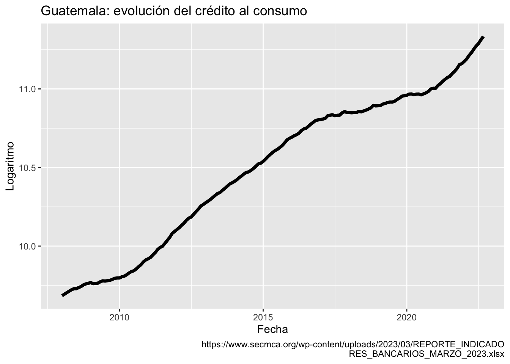
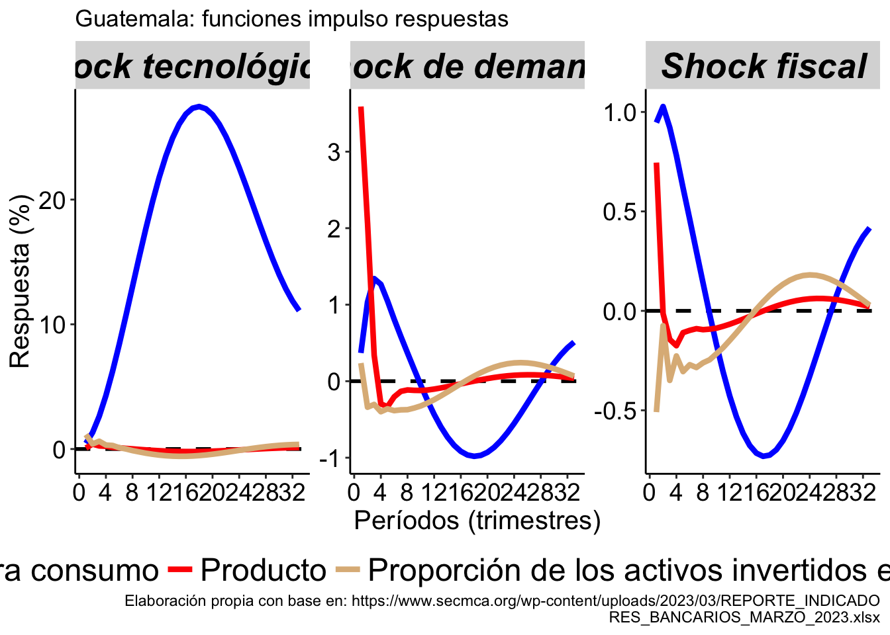

MODELOS SEMI ESTRUCTURALES PARA EL CRÉDITO AL CONSUMO
2023-03-31
Capítulo 1 Aplicación para Guatemala
1.1 Blanchard-Quah ortogonalización (restricciones) sobre C(1)
Al observar la evolución del crédito hacia consumo provisto por el sistema bancario guatemalteco y disponible en Secretaría Ejecutiva del Consejo Monetario Centroamericano (2023), se observa una series con una tendendencia estocástica.
library("zoo")
library("xts")
library(dplyr)
library(ggplot2)
library(kableExtra)
library(xtable)
library(tidyr)
library(quantmod)
library(RColorBrewer)
library(gridExtra)
#CARGAMOS DATOS MENSUALES
DATA_MES<-as.xts(read.zoo("GT_MES.csv", index.column = 1,
sep = ";", header=TRUE, format = "%Y-%m-%d"))
CREDITO<-DATA_MES$CRED
CREDITO<-data.frame(date=index(CREDITO), coredata(CREDITO))
CREDITO<-filter(CREDITO, date >= "2008-01-01")
colnames(CREDITO)<-c("date","CREDITO")
CREDITO<-mutate(CREDITO, CONSUMO=log(CREDITO))
G<-ggplot(CREDITO, aes(x=date, y=CONSUMO))
G<-G+labs(y="Logaritmo",
x="Fecha", title = "Guatemala: evolución del crédito al consumo",
caption = "https://www.secmca.org/wp-content/uploads/2023/03/REPORTE_INDICADO
RES_BANCARIOS_MARZO_2023.xlsx")+
geom_line(size=1.5)
G
El proceso de generación de la serie del crédito al consumo puede explicarse a través de la identificación de diferentes innovaciones. Una de ellas, las llamaré tecnológicas (en general uso ese término para referir los factores que pueden producir una mayor inclusión financiera independientemente si es producto de políticas o nuevas tecnologías), la segunda las de denanda y la tercera de absorción fiscal.
Para este ejercicio de identificación sigo la metodología propuesta por Blanchard and Quah (1988) y estimo la forma reducida de un Vector Autorregresivo integrado por la tasa de crecimiento de la cartera de consumo nominal (\(\Delta c_{t}\)), la tasa de crecimiento del PIB (\(\Delta y_{t}\)) y el porcentaje de los activos de los sistemas bancarios en títulos y valores públicos (\(\Delta y_{t}\)). La representación de este VAR como un proceso de media móviles está dado por:
\[\begin{equation} X_{t}=\left( \begin{array}{c} \Delta c_{t} \\ \Delta y_{t} \\ \Delta x_{t} \end{array} \right)=A(L)e_{t} \label{e1} \end{equation}\]
Considero \(A(0)=I\) y \(\Sigma_e=E(e e^{\tau})\) como la matriz de varianza y covarianza de la forma reducida del VAR mostrado en \(\ref{e1}\). Y supongo, primero que el crédito hacia consumo, la actividad económica y la exposición del sistema bancario hacia valores del gobierno son producidos a través de tres procesos estructurales independientes con shocks de varianza unitaria. Y segundo, que uno de esos procesos, el de las innovaciones tecnológicas, es el responsable de la tendencia estocástica observada en el crédito para consumo. Con base en lo anterior defino un VAR estructural cuya representación como un proceso de medias móviles es el siguiente:
\[\begin{equation} X_{t}=C(L)\epsilon_{t}=\left( \begin{array}{ccc} C_{1,1}(L) & C_{1,2}(L) & C_{1,3}(L)\\ C_{2,1}(L) & C_{2,2}(L) & C_{2,3}(L)\\ C_{3,1}(L) & C_{3,2}(L) & C_{3,3}(L) \end{array} \right)\epsilon_{t} \label{e2} \end{equation}\]
Siendo \(\Sigma_{\epsilon}=E(\epsilon \epsilon^{\tau})=I\) la matriz de varianza y covarianza de los shocks estructurales, los cuales son independientes y con varianza unitaria, y \(C_{1,2}(1)=C_{1,3}(1)=0\), indicando que el shock de demanda y fiscal sobre las variables tasa de crecimiento del PIB y porcentaje de activos invertidos en valores soberanos, en su orden, no tienen efectos de largo plazo en el crédito nominal para consumo.
El proceso y resultado de la estimación es el siguiente:
CRED <-DATA_MES$CRED
FISCAL <-DATA_MES$PUB
CRED <-CRED["2008-01-01/2022-09-01"]
ep1 <-endpoints(CRED , on = "quarters")
CRED <-period.apply(CRED , INDEX = ep1, FUN = sum)
DCRED <-diff(100*log(CRED ), lag=4)
FISCAL <-FISCAL["2008-01-01/2022-09-01"]
ep2 <-endpoints(FISCAL , on = "quarters")
TASA <-period.apply(FISCAL, INDEX = ep2, FUN = max)
DATA_TRIM <-as.xts(read.zoo("TRIM_GT.csv", index.column = 1,
sep = ";", header=TRUE, format = "%Y-%m-%d"))
PIB <-DATA_TRIM$PIB
PIB <-PIB["2001-03-01/2022-09-01"]
DPIB <-diff(100*log(PIB), lag=4)
#COMBINAR
BASE <-merge(DCRED, DPIB,join="left")
BASE <-merge(BASE, FISCAL,join="left")
BASE <-data.frame(date=index(BASE), coredata(BASE))
colnames(BASE)<-c("date","c", "y", 'x')
DATA <-dplyr::select(BASE, date, c,y,x)
colnames(DATA)<-c("date", "c", "y", 'x')
DATA <-filter(DATA, date >= "2016-03-01")
DATA <-xts(DATA[,-1], order.by=as.Date(DATA[,1], "%Y/%m/%d"))
library("svars")
VAR <- vars::VAR(DATA[,c(1,2,3)],p =2,type = "const")
VAR$varresult$c$coefficients## c.l1 y.l1 x.l1 c.l2 y.l2 x.l2
## 1.12127681 0.15372782 0.29159136 -0.11201301 -0.01109658 0.18036079
## const
## -9.91395632VAR$varresult$y$coefficients## c.l1 y.l1 x.l1 c.l2 y.l2 x.l2
## -0.25412909 0.57678412 0.39960337 0.27004423 -0.15357170 -0.02784201
## const
## -5.84527946VAR$varresult$x$coefficients## c.l1 y.l1 x.l1 c.l2 y.l2 x.l2
## 0.18016081 -0.13225215 0.28849915 -0.26998876 -0.03531496 0.45762387
## const
## 6.70493277SIGMA<-summary(VAR)
SIGMA$covres## c y x
## c 1.2422579 2.067672 0.1369263
## y 2.0676722 13.450295 0.5679060
## x 0.1369263 0.567906 1.6557099Habiendo estimado el VAR a continuación encontramos las restricciones de corto o contemporáneas y largo plazo:
BQMODEL<- BQ(VAR)
summary(BQMODEL)##
## SVAR Estimation Results:
## ========================
##
## Call:
## BQ(x = VAR)
##
## Type: Blanchard-Quah
## Sample size: 25
## Log Likelihood: -144.025
##
## Estimated contemporaneous impact matrix:
## c y x
## c 0.45904 0.3686 -0.9464
## y 0.08455 3.5899 -0.7455
## x 1.15782 0.2366 0.5091
##
## Estimated identified long run impact matrix:
## c y x
## c 16.7627 0.000 0.000
## y -0.1924 4.788 0.000
## x -1.2435 -2.228 2.005
##
## Covariance matrix of reduced form residuals (*100):
## c y x
## c 124.23 206.77 13.69
## y 206.77 1345.03 56.79
## x 13.69 56.79 165.57En seguida, calculamos la función impulso respuesta para cada variable, teniendo en cuenta que el PIB y la proporción de activos del sistema bancario invertidos en títulos y valores del gobierno no sufren en el largo plazo ningún efecto de los tres shocks estructurales.
FIR_BQ <- irf(BQMODEL,n.ahead = 32, impulse = c( "c", "y", "x"), boot =FALSE)
tecno <- cbind(cumsum(FIR_BQ$irf$c[, 1]), FIR_BQ$irf$c[, 2], FIR_BQ$irf$c[, 3])
RESULTADO1<-as.data.frame(tecno)
PERIODO<-seq(1,33,1)
RESULTADO1 <-cbind(RESULTADO1,PERIODO)
CODE<-rep("Tecnológico",33)
RESULTADO1 <-cbind(RESULTADO1,CODE)
######################################
demanda <- cbind(FIR_BQ$irf$y[, 1], FIR_BQ$irf$y[, 2], FIR_BQ$irf$y[, 3])
RESULTADO2<-as.data.frame(demanda)
RESULTADO2 <-cbind(RESULTADO2,PERIODO)
CODE<-rep("Demanda",33)
RESULTADO2 <-cbind(RESULTADO2,CODE)
######################################
fiscal <- cbind(-1*FIR_BQ$irf$x[, 1], -1*FIR_BQ$irf$x[, 2], -1*FIR_BQ$irf$x[, 3])
RESULTADO3 <-as.data.frame(fiscal)
RESULTADO3 <-cbind(RESULTADO3,PERIODO)
CODE<-rep("Fiscal",33)
RESULTADO3<-cbind(RESULTADO3,CODE)
RESULTADO <-rbind(RESULTADO1,RESULTADO2,RESULTADO3)
BASE_LONG <- gather(RESULTADO, key="measure", value="value",c("V1", "V2", "V3"))
BASE_LONG$measure <- factor(BASE_LONG$measure,levels = ,c("V1", "V2", "V3"))
BASE_LONG$CODE <- factor(BASE_LONG$CODE,levels = c("Tecnológico", "Demanda", "Fiscal"))
variable_names <- list(
"Tecnológico" = "Shock tecnológicos",
"Demanda" = "Shock de demanda",
"Fiscal" = "Shock fiscal"
)
variable_labeller2 <- function(variable,value){
if (variable=='CODE') {
return(variable_names[value])
} else {
return(region_names)
}
}
paleta<-c("blue","red", "burlywood")
Z<-ggplot(BASE_LONG, aes(x=PERIODO, y=value, group = measure,
colour=measure))+
facet_wrap(.~CODE, scales="free", labeller= variable_labeller2)
Z<-Z+labs(y="Respuesta (%)",
x="Períodos (trimestres)", title = "Guatemala: funciones impulso respuestas",
caption = "Elaboración propia con base en: https://www.secmca.org/wp-content/uploads/2023/03/REPORTE_INDICADO
RES_BANCARIOS_MARZO_2023.xlsx")+
geom_hline(yintercept=0, linetype="dashed",
color = "black", size=1)+
geom_line(size=1.5)+
scale_color_manual(values=paleta,
labels = c("Crédito para consumo",
"Producto",
"Proporción de los activos invertidos en valores públicos"
))
Z<-Z+theme(axis.line.x = element_line(colour = "black", size = 0.5),
axis.line.y.left = element_line(colour = "black", size = 0.5),
axis.line.y.right = element_blank(),
axis.text.x = element_text( color = "black", size = 14),
axis.text.y = element_text( color = "black", size = 14),
axis.title.x = element_text( color = "black", size = 15),
axis.title.y = element_text( color = "black", size = 15),
panel.grid.minor = element_blank(),
panel.grid.major.y = element_blank(),
panel.grid.major.x = element_blank(),
panel.border = element_blank(),
panel.background = element_blank(),
legend.key=element_rect(fill = "white", colour = "white",
color = "white", inherit.blank = FALSE),
legend.title = element_blank(),
legend.text = element_text(size=18),
legend.position="bottom",
legend.spacing.x = unit(0.10, 'cm'),
legend.margin=margin(),
legend.background = element_rect(fill = "white", colour = "transparent",
color = "white", inherit.blank = FALSE),
strip.text.x = element_text(
size = 20, color = "black", face = "bold.italic"
)
)+guides(color = guide_legend(nrow = 1))+
scale_x_continuous(breaks=seq(0,32,4))
Z
Inplicaciones
#Descomposición de la varianza HISTÓRICA
##FUNCIONES
VARhd <- function(Estimation){
## make X and Y
nlag <- Estimation$p # number of lags
DATA <- Estimation$y # data
QQ <- VARmakexy(DATA,nlag,1)
#invA <- t(chol(as.matrix(summary(Estimation)$covres)))# inverse of the A matrix
invA <- BQMODEL$LRIM
#invA <- bqfactor
Fcomp <- companionmatrix(Estimation) # Companion matrix
#det <- c_case # constant and/or trends
F1 <- t(QQ$Ft) # make comparable to notes
eps <- ginv(invA) %*% t(residuals(Estimation))
# structural errors
nvar <- Estimation$K # number of endogenous variables
nvarXeq <- nvar * nlag # number of lagged endogenous per equation
nvar_ex <- 0 # number of exogenous (excluding constant and trend)
Y <- QQ$Y # left-hand side
#X <- QQ$X[,(1+det):(nvarXeq+det)] # right-hand side (no exogenous)
nobs <- nrow(Y) # number of observations
## Compute historical decompositions
# Contribution of each shock
invA_big <- matrix(0,nvarXeq,nvar)
invA_big[1:nvar,] <- invA
Icomp <- cbind(diag(nvar), matrix(0,nvar,(nlag-1)*nvar))
HDshock_big <- array(0, dim=c(nlag*nvar,nobs+1,nvar))
HDshock <- array(0, dim=c(nvar,(nobs+1),nvar))
for (j in 1:nvar){ # for each variable
eps_big <- matrix(0,nvar,(nobs+1)) # matrix of shocks conformable with companion
eps_big[j,2:ncol(eps_big)] <- eps[j,]
for (i in 2:(nobs+1)){
HDshock_big[,i,j] <- invA_big %*% eps_big[,i] + Fcomp %*% HDshock_big[,(i-1),j]
HDshock[,i,j] <- Icomp %*% HDshock_big[,i,j]
}
}
HD.shock <- array(0, dim=c((nobs+nlag),nvar,nvar)) # [nobs x shock x var]
for (i in 1:nvar){
for (j in 1:nvar){
HD.shock[,j,i] <- c(rep(NA,nlag), HDshock[i,(2:dim(HDshock)[2]),j])
}
}
return(HD.shock)
}
##########
VARmakexy <- function(DATA,lags,c_case){
nobs <- nrow(DATA)
#Y matrix
Y <- DATA[(lags+1):nrow(DATA),]
Y <- DATA[-c(1:lags),]
#X-matrix
if (c_case==0){
X <- NA
for (jj in 0:(lags-1)){
X <- rbind(DATA[(jj+1):(nobs-lags+jj),])
}
} else if(c_case==1){ #constant
X <- NA
for (jj in 0:(lags-1)){
X <- rbind(DATA[(jj+1):(nobs-lags+jj),])
}
X <- cbind(matrix(1,(nobs-lags),1), X)
} else if(c_case==2){ # time trend and constant
X <- NA
for (jj in 0:(lags-1)){
X <- rbind(DATA[(jj+1):(nobs-lags+jj),])
}
trend <- c(1:nrow(X))
X <-cbind(matrix(1,(nobs-lags),1), t(trend))
}
A <- (t(X) %*% as.matrix(X))
B <- (as.matrix(t(X)) %*% as.matrix(Y))
Ft <- ginv(A) %*% B
retu <- list(X=X,Y=Y, Ft=Ft)
return(retu)
}
companionmatrix <- function (x)
{
if (!(class(x) == "varest")) {
stop("\nPlease provide an object of class 'varest', generated by 'VAR()'.\n")
}
K <- x$K
p <- x$p
A <- unlist(Acoef(x))
companion <- matrix(0, nrow = K * p, ncol = K * p)
companion[1:K, 1:(K * p)] <- A
if (p > 1) {
j <- 0
for (i in (K + 1):(K * p)) {
j <- j + 1
companion[i, j] <- 1
}
}
return(companion)
}SERIE <-fitted(VAR)
BQh<-VARhd(VAR)
dates1<- seq(as.Date("2016-03-01"), length=length(SERIE[,1])+2,by="quarters")
BQc_T<-BQh[,1,1] #SHOCK TECNOLÓGICO SOBRE c
BQc_T<-xts(BQc_T, order.by=dates1)
BQc_D<-BQh[,1,2] #SHOCK DEMANDA SOBRE c
BQc_D<-xts(BQc_D, order.by=dates1)
BQc_F<-BQh[,1,3] #SHOCK DEMANDA2 SOBRE c
BQc_F<-xts(BQc_F, order.by=dates1)